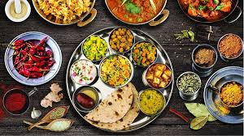
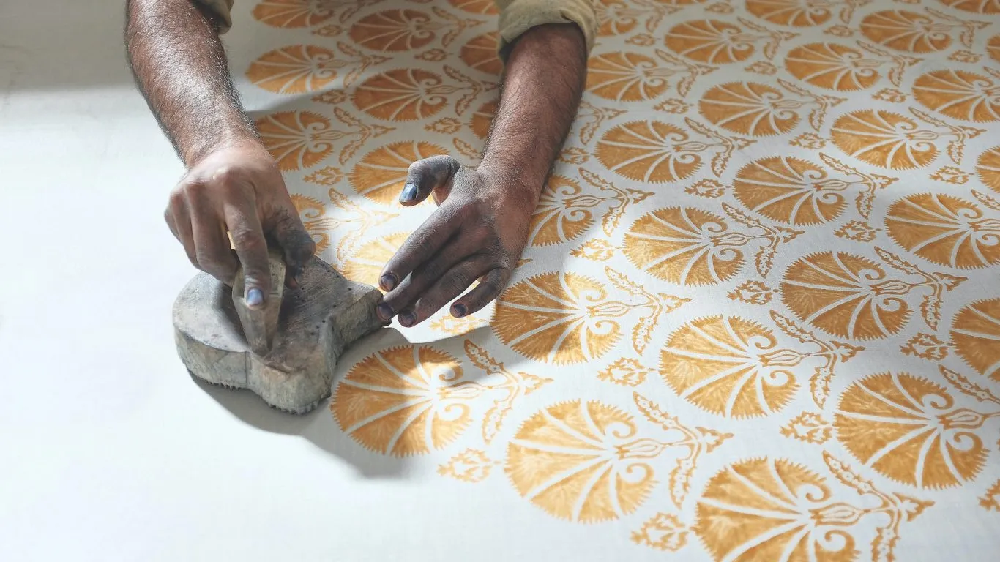

Site
Music
Dance

Food

Outfits
India, a land of rich cultural heritage, is home to numerous historical sites that showcase its glorious past, with many of these architectural marvels constructed using an array of minerals found in the country. One such site is the Taj Mahal, a majestic white marble mausoleum in Agra, built by Mughal Emperor Shah Jahan in memory of his beloved wife Mumtaz Mahal. The Taj Mahal's construction utilized an assortment of minerals, including white marble from the town of Makrana in Rajasthan, black marble from the town of Bharatpur, and red sandstone from the city of Fatehpur Sikri. The intricate inlays of precious stones, including jasper, jade, and turquoise, add to the monument's breathtaking beauty.
Another iconic site is the Red Fort, also in Agra, which served as the imperial palace of the Mughal Empire for nearly 200 years. The fort's construction employed a range of minerals, including red sandstone, white marble, and black marble, which were used to create the fort's imposing walls, palaces, and mosques. The ancient city of Varanasi, situated on the banks of the Ganges River, is considered one of the oldest continuously inhabited cities in the world, with a history dating back over 3,000 years. The city's numerous temples and ghats were constructed using a variety of minerals, including limestone, sandstone, and granite, which were often adorned with intricate carvings and sculptures.
The Hampi temple complex in Karnataka, a UNESCO World Heritage Site, is a testament to the architectural prowess of the Vijayanagara Empire. The complex's numerous temples, including the iconic Virupaksha Temple, were built using a range of minerals, including granite, basalt, and schist, which were often decorated with intricate carvings and sculptures. The Qutub Minar in Delhi, built in the 12th century, stands as a symbol of the Delhi Sultanate's power and influence. The minar's construction employed a range of minerals, including red sandstone, white marble, and black marble, which were used to create the tower's imposing structure and intricate carvings.
India's rich mineral resources have played a significant role in the construction of these historical sites, with many of these minerals still being used in modern construction projects today. The country's diverse geological landscape has yielded a wide range of minerals, including limestone, granite, basalt, and marble, which have been used to create some of the most iconic and enduring architectural wonders of the world. These historical sites not only reflect India's diverse cultural heritage but also attract millions of tourists and history enthusiasts from around the world, who come to marvel at the country's rich mineral wealth and architectural prowess.
India's rich cultural heritage is not only reflected in its historical sites, but also in its traditional music instruments, which have been an integral part of the country's musical landscape for centuries. One of the most iconic instruments is the Veena, a stringed instrument that has been mentioned in ancient Hindu scriptures such as the Rigveda and the Mahabharata. The Veena's intricate carvings and playing technique have made it a staple of Indian classical music, with many legendary musicians, including the revered Carnatic music composer, Thyagaraja, having mastered the instrument.
Another ancient instrument is the Sitar, a stringed instrument that originated in the 16th century and is known for its distinctive resonator and sympathetic strings. The Sitar has been a favorite of many Indian classical musicians, including the legendary Ravi Shankar, who popularized the instrument globally through his collaborations with Western musicians such as Yehudi Menuhin and The Beatles. The Tabla, a pair of hand drums, has been an integral part of Indian classical music for centuries, with its complex rhythms and intricate playing technique making it a staple of many traditional music forms, including Hindustani and Carnatic music.
The Flute, known as the Bansuri in Hindi, has been a popular instrument in Indian music for thousands of years, with its sweet, melodious sound making it a favorite of many musicians and music lovers alike. The Shehnai, a double-reed woodwind instrument, has been an integral part of Indian classical music and folk music, with its haunting, mournful sound making it a staple of many traditional music forms, including the classical music of North India. The Tanpura, a long-necked, plucked string instrument, has been used for centuries as a drone instrument in Indian classical music, providing a rich, resonant sound that underpins many traditional music forms.
These historical music instruments have not only played a significant role in shaping India's rich musical heritage but have also influenced the development of music globally. Many Western musicians, including The Beatles and Led Zeppelin, have been inspired by Indian classical music and have incorporated traditional Indian instruments into their music. Today, these instruments continue to be an integral part of Indian classical music, with many musicians and music lovers around the world appreciating their beauty, complexity, and emotional resonance.
India's rich cultural heritage is not only reflected in its historical sites and traditional music instruments, but also in its diverse and vibrant dance forms, which have been an integral part of the country's cultural landscape for centuries. One of the most iconic dance forms is Bharatanatyam, a classical dance from South India that is known for its intricate footwork, elaborate hand gestures, and expressive facial expressions. This ancient dance form has been mentioned in ancient Hindu scriptures such as the Natya Shastra and has been a staple of Indian classical dance for centuries, with many legendary dancers, including the revered Rukmini Devi Arundale, having mastered the form.
Another classical dance form is Kathak, a high-energy dance from North India that is known for its lightning-fast footwork, intricate rhythms, and dynamic movements. Kathak has been a favorite of many Indian classical dancers, including the legendary Birju Maharaj, who has popularized the form globally through his performances and teachings. The Odissi dance, a classical dance from the state of Odisha, is known for its fluid movements, intricate footwork, and expressive facial expressions, and has been a staple of Indian classical dance for centuries, with many legendary dancers, including the revered Kelucharan Mohapatra, having mastered the form.
The Kathakali dance, a classical dance from the state of Kerala, is known for its elaborate costumes, intricate makeup, and dramatic storytelling, and has been a staple of Indian classical dance for centuries, with many legendary dancers, including the revered Kalamandalam Gopi, having mastered the form. The Manipuri dance, a classical dance from the state of Manipur, is known for its fluid movements, intricate footwork, and expressive facial expressions, and has been a staple of Indian classical dance for centuries, with many legendary dancers, including the revered Guru Bipin Singh, having mastered the form.
These classical dance forms have not only played a significant role in shaping India's rich cultural heritage but have also influenced the development of dance globally. Many Western dancers, including the legendary Martha Graham, have been inspired by Indian classical dance and have incorporated traditional Indian dance movements into their choreography. Today, these dance forms continue to be an integral part of Indian classical dance, with many dancers and dance enthusiasts around the world appreciating their beauty, complexity, and emotional resonance.
In addition to these classical dance forms, India is also home to a wide range of folk dances, including the energetic Bhangra from Punjab, the lively Garba from Gujarat, and the graceful Lavani from Maharashtra, which are an integral part of the country's cultural landscape and are often performed during festivals and celebrations. These folk dances not only reflect the diversity and richness of Indian culture but also provide a glimpse into the country's vibrant and dynamic cultural heritage.
India, a land of diverse cultures and traditions, is also a culinary paradise, with a rich and varied food heritage that reflects the country's complex history, geography, and cultural influences. From the spicy curries of the south to the rich biryanis of the north, and from the fragrant street food of the cities to the hearty home-cooked meals of the villages, Indian cuisine is a true reflection of the country's incredible diversity.
One of the most iconic Indian dishes is the Tandoori Chicken, a popular North Indian dish that originated in the city of Delhi. Marinated in a mixture of yogurt, spices, and lemon juice, the chicken is cooked to perfection in a tandoor, a clay oven, and served with a side of naan bread and vegetables. Another beloved dish is the Biryani, a flavorful rice-based dish that originated in the city of Hyderabad. Made with a mixture of basmati rice, spices, and marinated meat or vegetables, the Biryani is a staple of Indian cuisine, with many variations found across the country.
The southern state of Tamil Nadu is famous for its Dosas, a type of fermented crepe made from rice and lentils, which is often served with a side of sambar, a spicy lentil-based vegetable stew, and chutney. The eastern state of Bengal is known for its Fish Fry, a popular dish made with fresh fish marinated in a mixture of spices and mustard oil, and fried to perfection. The western state of Gujarat is famous for its Gujarati Thali, a traditional meal consisting of a variety of dishes, including dal, rice, roti, and vegetables, all served on a large platter.
Indian street food is also a culinary delight, with popular dishes like the Vada Pav, a fried doughnut sandwich filled with spicy potatoes and served in a bread bun, and the Pani Puri, a crispy puri filled with a mixture of flavored water, tamarind chutney, and spices. The country's many festivals and celebrations are also a time for traditional foods, such as the sweet dishes like Gulab Jamun and Jalebi, which are often served during Diwali, the festival of lights.
India's rich food heritage is also reflected in its many regional cuisines, each with its own unique flavors, ingredients, and cooking techniques. The Mughal cuisine of North India, for example, is known for its rich and creamy dishes, such as the Butter Chicken and the Palak Paneer, while the Hyderabadi cuisine of South India is famous for its spicy and flavorful dishes, such as the Haleem and the Biryani.
In addition to its rich culinary heritage, India is also home to a wide range of exotic spices, herbs, and ingredients, including turmeric, cumin, coriander, and cardamom, which are used to add flavor and aroma to many Indian dishes. The country's many markets and bazaars are also a treasure trove of fresh fruits, vegetables, and grains, which are used to create a wide range of delicious and nutritious dishes.
Overall, Indian cuisine is a true reflection of the country's incredible diversity, with its rich flavors, vibrant colors, and varied textures making it a culinary paradise for food lovers from around the world. Whether it's a spicy curry from the south, a rich biryani from the north, or a fragrant street food from the cities, Indian food is a true delight for the senses, and a testament to the country's rich cultural heritage.
Indian cultural dresses are a vibrant reflection of the country's rich heritage and diversity, showcasing a variety of styles that vary across regions, communities, and occasions. Traditional attire such as sarees for women and dhotis or kurta-pajamas for men exemplify the intricate craftsmanship and colorful fabrics that characterize Indian textiles. Each garment often carries significant cultural symbolism, with specific patterns, colors, and draping styles representing various festivals, rituals, and social statuses.
The saree, a timeless garment, is known for its elegant draping and versatile styling options, making it a popular choice for formal and ceremonial occasions. Similarly, the dhoti, a traditional garment worn by men, and the kurta-pajama, a comfortable and stylish ensemble, are integral to Indian men's fashion. These garments are often adorned with elaborate embellishments such as embroidery, mirror work, and beadwork, enhancing their aesthetic appeal and showcasing the artistry of Indian textile craftsmanship.
The use of vibrant colors and intricate patterns in Indian attire is not merely decorative but also holds cultural significance. For example, red and gold are commonly associated with weddings and festive occasions, while pastel hues might be chosen for more subdued events. Traditional attire varies greatly between regions, with distinct styles and fabrics such as silk from Tamil Nadu, cotton from Gujarat, and wool from Kashmir, each representing the unique cultural identity of their respective areas.
As globalization influences fashion trends, traditional Indian attire continues to evolve. Contemporary designers are blending classic styles with modern elements, creating innovative designs that appeal to both traditional and modern sensibilities. This fusion of styles helps preserve the essence of Indian culture while adapting to global fashion trends, ensuring that traditional garments remain relevant in today's fashion landscape.
In essence, Indian cultural dresses are more than just clothing; they are a celebration of the country's rich history, artistry, and diverse traditions. They offer a glimpse into the cultural fabric of India, reflecting the values, aesthetics, and identity of its people.